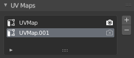

UV & 纹理空间¶
UV 贴图¶

网格标签页的UV贴图面板。¶
在网格标签页的UV贴图面板有一个列出所有为网格创建的UV映射的 列表视图。被选中的映射会在UV/图像编辑器显示。
- 激活渲染
如果没有明确指定其他映射的话。单击相机图标，启用渲染该UV贴图。
- 添加
+ 单击 添加 按钮复制选中UV映射。
See also
请注意，每个纹理都可以映射到特定的UV布局。
网格标签页的UV贴图面板。¶
在网格标签页的UV贴图面板有一个列出所有为网格创建的UV映射的 列表视图。被选中的映射会在UV/图像编辑器显示。
如果没有明确指定其他映射的话。单击相机图标，启用渲染该UV贴图。
+单击 添加 按钮复制选中UV映射。
See also
请注意，每个纹理都可以映射到特定的UV布局。